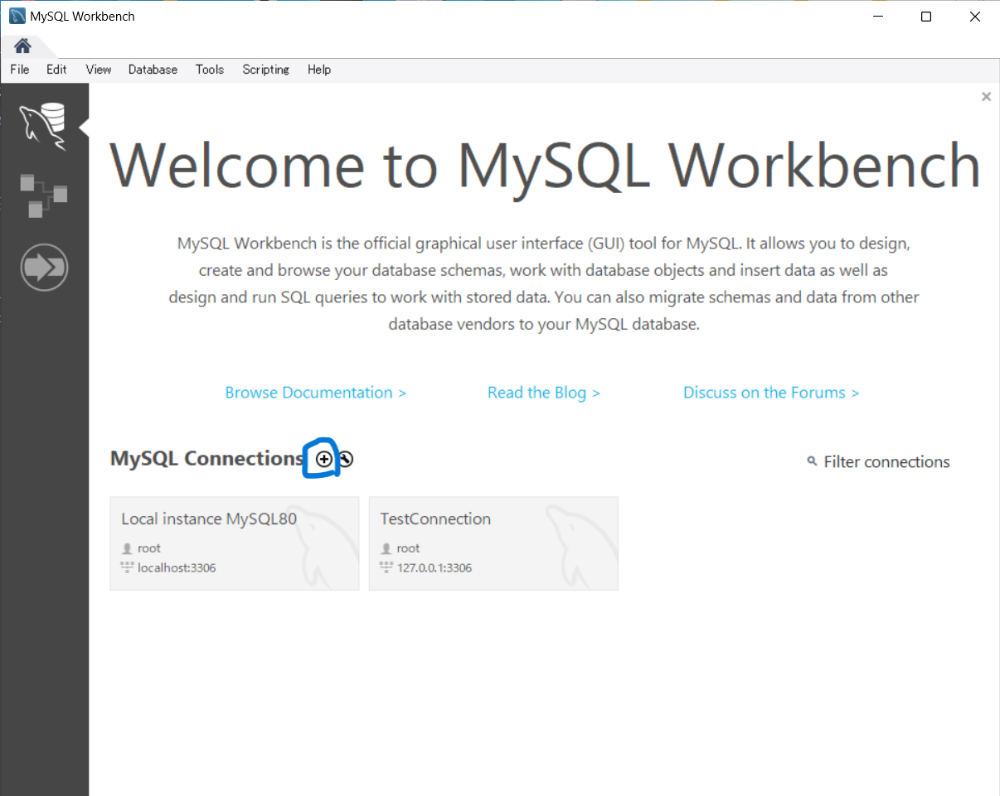
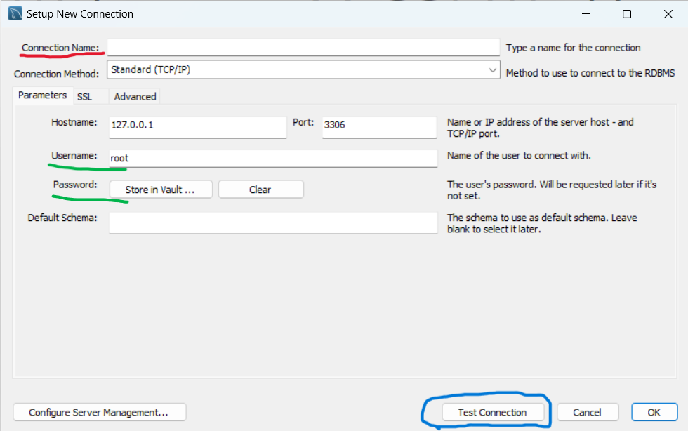

MySQL Workbenchのセットアップ
MySQL Workbenchをまず使えるところまでセットアップしていきます。
まずMySQL Workbenchを起動するとこのような画面が出てくるはずです。なお、これは私の開発環境なので、実際にはtestという名前のプロジェクトはなくて当たり前です。むしろ存在したらバグです。
あからさまについているプラスマークを押してください。青い丸で囲ってあるところです。
そうすると新しいコネクションをコネコネできるウインドウが開きます。コネクションって言われるとわからないかもしれませんがプログラムで言う新規プロジェクト作成なんかに当たります。 赤線を引っ張っているところに、日本語名で名前を入れてください。適当にtestとか短い名前を付けておきましょう。
次に、緑色の線を引いたところにインストールの時にメモしたrootアカウントのパスワードを入力しましょう。忘れてしまった人は再インストールフェスティバルが始まります。
パスワードを入力したら青い丸でかこったTest Connectionをクリックしてください。
パスワードを入力したら青い丸でかこったTest Connectionをクリックしてください。
接続に成功するとSuccessfully made tha MySQL Connectionと表示されます。
もし失敗したら出てくるログ内容を読み、対応してください。